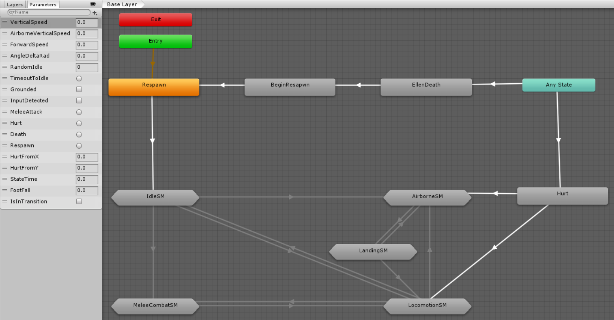

Difficulty: Intermediate
Location: Assets/Plugins/Animancer/Examples/09 Animator Controllers/02 3D Game Kit
This example demonstrates how you can remake the Animator Controller based character setup used in Unity's 3D Game Kit to use Animancer (and its Finite State Machine system) instead.
Pro-Only Features are used in this example: Controller States. Animancer Lite allows you to try out these features in the Unity Editor, but they are not available in runtime builds unless you purchase Animancer Pro.

Example Scene
Unfortunately, licensing restrictions (and file sizes) prevent the assets used by this example from being included with Animancer so in order to actually see it in action you will need to:
- Create a new Unity project.
- Import Animancer and the 3D Game Kit (it contains several gigabytes worth of assets so it will take a long time to download and import).
- Extract the contents of the 3D Game Kit Example.zip in the example folder.
Otherwise you will only be able to read through this documentation and the example scripts.
The example scene contains both the original Mecanim character and the Animancer character so you can swap between them for comparison (it starts with Animancer by default).
Overview
The original character is based around a single Animator Controller:

This example doesn't include enemies so we can ignore the Hurt and Death states, leaving 6 main states for the character:
The Animator Controller contains a few StateMachineBehaviours on certain states, but it is mostly controlled by the PlayerController component. This is a poorly designed setup because even though it uses the concept of a Finite State Machine, it still violates the Single Responsibility Principle by keeping the individual logic of all states in that one huge class instead of separating their concerns into multiple scripts. The practical problems this causes are explained later on in their relevant sections.
Animancer instead uses a code based Finite State Machine with a central Creature script and a separate CreatureState for each of those states like in the State Machines examples. Many of the states directly reference their AnimationClips while some of them play their own invididual Animator Controllers containing a single Blend Tree each.
The key difference between PlayerController and Creature is that the former is responsible for managing everything the character can do while the latter is only responsible for things common to multiple states like gravity and turning. For example, if you want to know what is involved in the Animancer's AirborneState, you can go to that script to see what it does. But if you want to know what is involved in the original AirborneSM, you need to examine the Animator Controller and also find the PlayerController.FixedUpdate and OnAnimatorMove methods which contain logic for input blocking, attacks, movement, turning, audio, and a time out to idle. Most of those things aren't relevant when the character is in the air, but you can't be sure of that without going through them all so it would be very much harder than necessary to find and fix any bugs.
| Problems with the Original | The character implemented here is directly based on the player character from the 3D Game Kit, but it is not an exact copy because the original had several problems which we want to avoid. |
| Respawn | Stand up on startup and after dying. |
| Idle | Stand still and randomly play a selection of other animations if you get bored. |
| Locomotion | Use a Blend Tree with Root Motion to walk around, as well as some additional animations for quick turning. |
| Airborne | Jump and fall using a Blend Tree based on your vertical speed. |
| Landing | When you touch the ground after being Airborne, play a landing animation depending on how fast you are going. |
| Attack | Attack using several different animations to form a combo. |